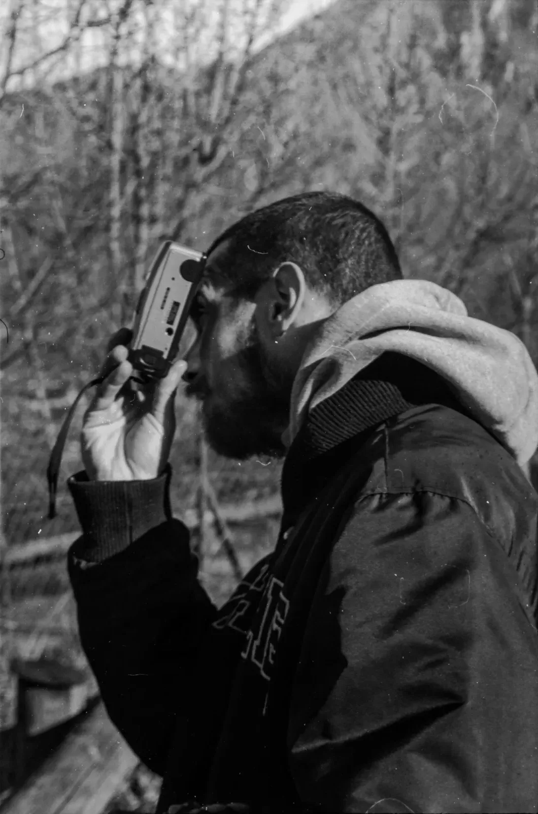
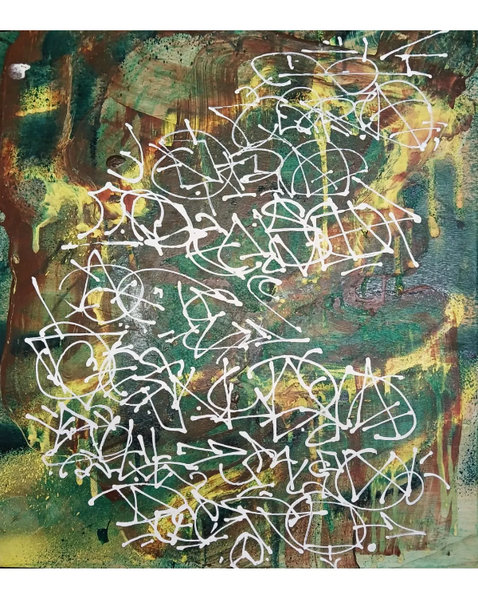
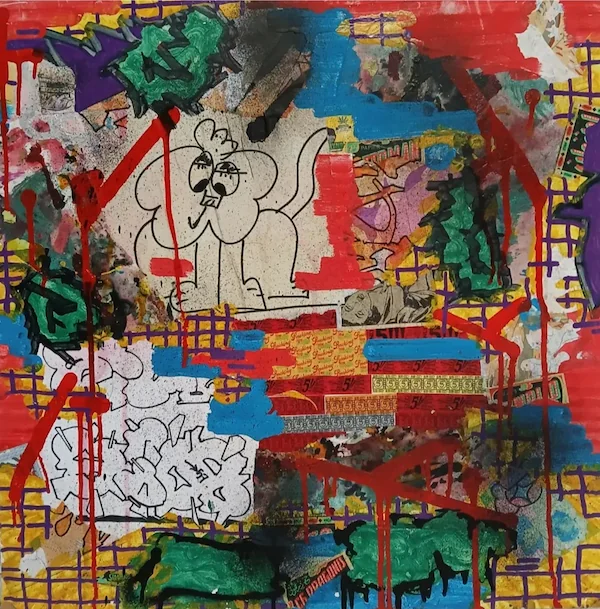

Chi sono
Nel suo lavoro multidisciplinare, TuffRat intreccia pittura, fotografia e sonorità hip hop, trattando l'arte come un'estensione diretta dell'esperienza di vita. Cresciuto all'interno del collettivo Melograno, ha iniziato il suo percorso artistico attraverso i graffiti, un background che ha definito il suo approccio istintivo alla creazione.
Rifiutando la ricerca di un'estetica puramente decorativa, TuffRat agisce come catalizzatore del disagio contemporaneo. La sua pratica mira a una comunicazione limpida che riflette la società attuale, catturando l'essenza cruda della vitalità piuttosto che una sua rappresentazione costruita.
"L'arte deve essere come la vita stessa: né buona né cattiva, ma oggettiva."
Mostre selezionate: Mind The Gap (2025)
Intervista online: PULSOS Ep.10
Galleria
Selezione di lavori recenti

